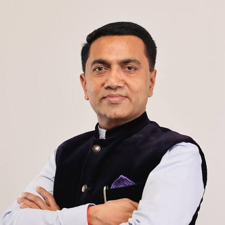
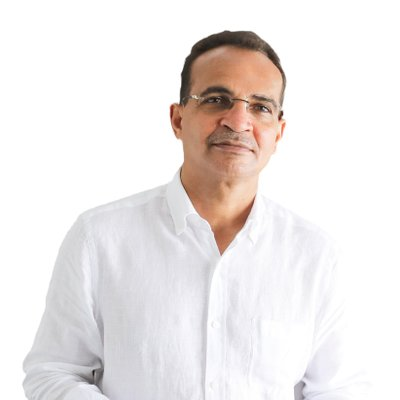
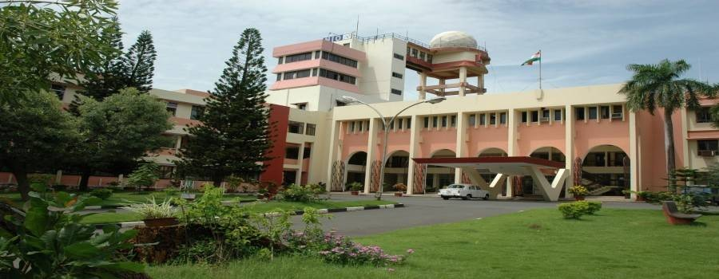

Dr. Pramod Sawant
Hon'ble Chief Minister of Goa
Leading Goa's commitment to sustainable waste management and the Swachh Bharat initiative.
A platform for practical waste solutions, connecting government, technology, and innovation across India working toward Swachh Bharat 2035.
Join us as a professional or student. All registrations welcome.
Learn more →Distinguished officials and institutional partners driving Goa's waste management vision.

Leading Goa's commitment to sustainable waste management and the Swachh Bharat initiative.

Choose your track: professionals showcasing solutions or students solving challenges.
Join government officials, industry leaders, innovators, and academics for two days of knowledge sharing and technology interaction.
School and college teams can submit waste management solutions as part of India's clean initiative.
Resource recovery, waste-to-resource models, and sustainable business practices.
Indigenous technologies, practical solutions, and scalable waste management systems.
Centralised & decentralised approaches, community participation, and replication.
Explore financial opportunities and economic incentives in waste management.
Start-ups, business models, and implementation pathways for waste solutions.
Community engagement, behavioural change, and collective action for clean India.

Modern conference spaces, oceanside setting, and excellent accessibility for all participants.
Join hundreds of professionals and students working on India's waste management future.